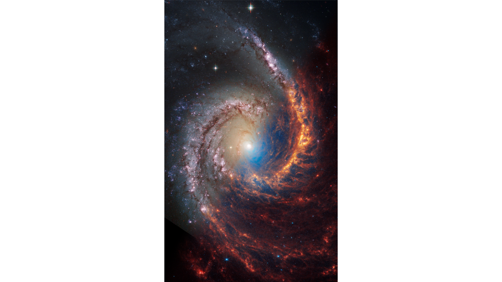

Unveiling the Cosmos: Insights into Cosmology from JWST

Thousands of galaxies flood this near-infrared image of galaxy cluster SMACS 0723. High-resolution imaging from NASA’s James Webb Space Telescope combined with a natural effect known as gravitational lensing made this finely detailed image possible.
Galactic Marvels Through JWST
Face-on spiral galaxy, NGC 1566, is split diagonally in this image: The James Webb Space Telescope’s observations appear on the bottom right, and the Hubble Space Telescope’s at the top left. Webb and Hubble’s images show a striking contrast, an inverse of darkness and light.
Nebulae: The Cosmic Paintings of the Universe
The Pillars of Creation are set off in a kaleidoscope of color in NASA’s James Webb Space Telescope’s near-infrared-light view. The pillars look like arches and spires rising out of a desert landscape, but are filled with semi-transparent gas and dust, and ever changing. This is a region where young stars are forming – or have barely burst from their dusty cocoons as they continue to form.
Beyond Our Solar System: Capturing the beauty of Exoplanets
L1527, shown in this image from NASA’s James Webb Space Telescope’s MIRI (Mid-Infrared Instrument), is a molecular cloud that harbors a protostar. The swirling disk of material is forming new planets, with the early stages of planet formation captured here. Webb’s ability to observe at longer wavelengths has allowed us to glimpse the origins of planetary systems in unprecedented detail.